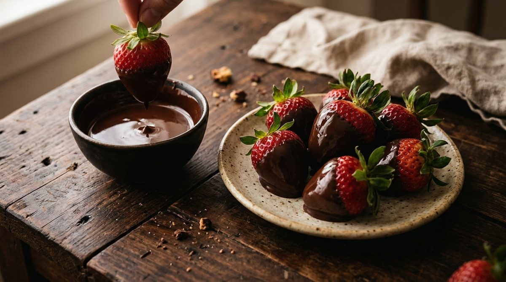

Los favoritos de la casa
Un chocolate espeso que se sirve en taza de porcelana, un brownie que llega tibio y un croissant con el corazón de cacao fundido.
Ver todo el menúGranos tostados despacio y molidos a mano, cada mañana.
Una olla de cobre, fuego bajo y paciencia. Así sale un chocolate que abraza.
Caliente, espeso y con crema. Pasa por una taza o reserva tu mesa.
Un chocolate espeso que se sirve en taza de porcelana, un brownie que llega tibio y un croissant con el corazón de cacao fundido.
Ver todo el menú
Madera oscura, luz tibia y el aroma del cacao recién fundido. Ven a conocer el lugar donde la tarde se hace más larga.
Conocer el localCada receta se prepara al momento, con ingredientes que conocemos por su nombre y su origen.
Seleccionado de pequeños productores bolivianos.
La misma olla de cobre desde el primer día.
